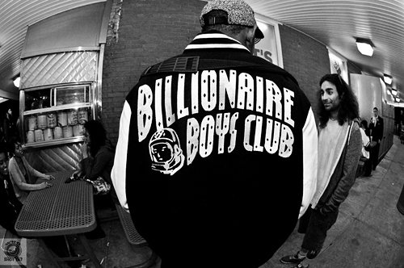

Billionaire Boys Club and Ice Cream are two lines of clothing established by Pharrell Williams and Nigo, founder of clothing label BAPE. The lines consist of T-shirts, polos, sweatshirts, knits, denim, suits and shirts; outerwear in leather, down, cotton, and technical fabrics; hats, sneakers, underwear, socks and accessories. The items are produced in very limited quantities and are usually sold for high prices. In 2005, Pharrell Williams, one half of The Neptunes partnered with Japan's fashion icon Nigo, the founder of A Bathing Ape (BAPE). The two collaborated to create and launch two new premium streetwear brands: Billionaire Boys Club and Ice Cream. The brand suffered many setbacks after its original conception due to disputes between Williams and Reebok. Reebok was originally set to release the clothing line alongside the Ice Cream sneaker line. Although the sneakers made it, the clothing line was postponed and all projects came to an end in late 2004/early 2005. It was at the very end of 2005 when the brand was finally launched as a sister company to A Bathing Ape. In August 2011 news surfaced that rapper Jay-Z, a frequent collaborator of Pharrell known to wear BBC himself, would be partnering with the Billionaire Boys Club line. Men's clothing magazine and website GQ initially reported that Jay-Z had purchased the licensing to manufacture and distribute BBC under his own label Rocawear, however Jay himself took to his Twitter account to announce that it was in fact a partnership, and not a full takeover. Billionaire Boys Club originally was exclusively manufactured in Japan, however in recent seasons the clothing has been made in Canada, Korea, and China.BBC has recently launched a new brand called Billionaire Girls Club or BGC.In addition, Pharrell and Nigo have done a special tribute to Tokyo, with a Tokyo capsule line. The iconic BBC letters have been replaced with TYO and a special astronaut image. No indications that this will be sold outside of Japan however. Billionaire Boys Club has flagship store in SoHo, New York City and an official Ice Cream store in Tokyo, Japan. Several stores that retail Billionaire Boys Club and Ice Cream clothing exist across North America, the United Kingdom and Europe, as well as Asia and the Middle East.
| BBC | Supreme | Blackscvle |